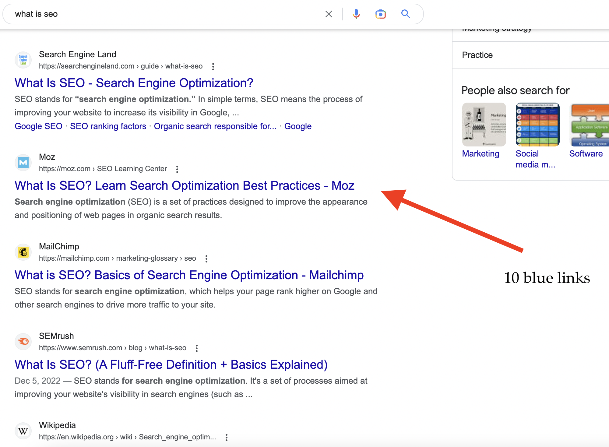
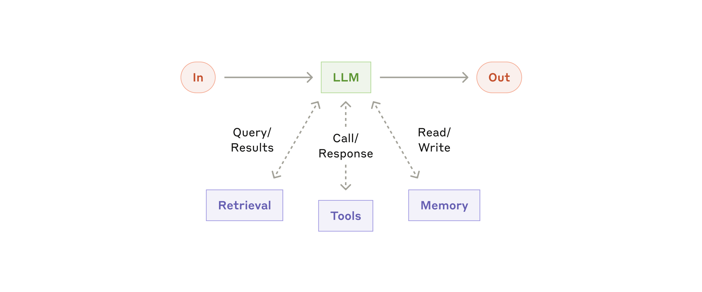

Novastacks AI
AI Panel
Agentic AI
Workflows.
Workflows.
with Novastacks AI — going from a personal assistant
to the system that runs your operations.
to the system that runs your operations.
Tina Chu
University of Pennsylvania · Agentic AI Workflows · 2026
1 / 29
OPENING2 / 29
The shift is already happening
The shift of agentic workflow is happening.
01 · More people are using it
87%
of marketers use gen AI in a recurring workflow — up from 51% two years ago.
57%
of enterprises already have agents in production.
02 · And they save serious time
6.1 hrs
recovered per marketer, per week. Senior practitioners save 8–10 hrs.
50–60%
cut on PRDs, meeting notes, research synthesis (PMs).
03 · Compounding into output
44%
productivity gain for teams using AI strategically · 20–30% ROI lift.
80%
shorter content production timelines.
Sources · HubSpot AI Trends 2026 · McKinsey Global Survey · G2 Enterprise AI Agents Report · Averi State of AI Content Marketing 2026
Data: Q1–Q2 2026
2 / 29
SECTION 0 · Why we're here3 / 29
Marketing functions are changing too
The marketing functions start changing too.
+205%
YoY growth in Marketing Engineer & GTM roles open on LinkedIn — 3,000+ live listings.
Execution
Traditional marketer.
A traditional marketer manually strategises, executes, and reports on campaigns — running each step by hand with off-the-shelf tools.
vs
Orchestration
Marketing engineer.
A marketing engineer builds the systems, agents, and automations that make every GTM function faster — combining coding, APIs, and system architecture with marketing judgment.
"With tools, you are the operator. With agents, you are the manager." Emily Kramer · ex-VP Marketing, Asana
3 / 29
SECTION 0 · Why we're here4 / 29
How AI changes marketing
The shift reaches the channels
How AI changes
marketing.
marketing.
Start with the channel everyone knows — search. It just split in two.
4 / 29
SECTION 0 · Why we're here5 / 29
The terms: GEO & AEO
The terms: GEO & AEO.
GEO
Generative Engine Optimisation — getting your content surfaced inside AI-generated answers.
AEO
Answer Engine Optimisation — a.k.a. AI Search Optimisation. Being the source an answer engine picks.
In practice the terms overlap — both mean optimising to be cited by AI, not just ranked by Google.
5 / 29
SECTION 0 · Why we're here6 / 29
AEO and SEO aren't the same
AEO and SEO aren't the same.
A shifting organic search landscape. The lines are blurring — only ~25–75% of AI-Overview citations overlap with the classic search results. The rest are won, or lost, somewhere else.
SEO
Rank in the ten blue links.
Search Engine Optimisation — earn a position on the classic Google results page. The customer scrolls, then clicks.
vs
AEO
Be the source the AI cites.
Answer Engine Optimisation — get named inside the answer from ChatGPT, Google AI Overviews, and Perplexity. The customer never sees a list.
Key finding ChatGPT and Google often cite different brands for the same query. In a "SaaS for freight forwarders in Asia" test, fewer than 20% of brands were named by both.
6 / 29
SECTION 0 · Why we're here7 / 29
SEO isn't dying
SEO isn't dying.

This is still SEO — the classic "ten blue links."
AEO doesn't replace it. It sits on top of the same foundations — good SEO is what makes you eligible to be cited by the AI in the first place.
7 / 29
SECTION 0 · Why we're here8 / 29
AEO in the wild · our own
The AI names us first.

Novastacks · our own
Search "best AEO agency Singapore" and Google's AI Overview puts Novastacks at the top of its answer. New customers discover us inside the AI's recommendation — not by scrolling ten blue links. That's AEO.
Objective → Discovery · new-customer awareness
Novastacks AI
8 / 29
SECTION 1 · The building blocks9 / 29
Automation · Augmentation · Agency
Automation. Augmentation. Agency.
Three modes — one AI. Knowing which to reach for is the whole job.
01
Automation.
Human wires a flow. Machine runs it the same way, every time.
Tool
n8n · Zapier · RPA
How it works
Same steps, every run. 100% consistent per step. Deterministic.
Best for
High-volume, predictable, auditable work.
Sales example
Meeting booked → HubSpot deal → nurture sequence → Slack ping to the AE.
02
Augmentation.
Human does the work with AI. You prompt, it helps, you review.
Tool
Claude.ai · Cowork · Claude in Chrome
How it works
You ask, it assists. You stay in the loop every turn.
Best for
Drafting, thinking, research — your brain's co-pilot.
Sales example
"Help me redraft this email for a skeptical CFO — tighter, more ROI-forward."
03
Agency.
Human configures the AI to work independently. Set the rules; it decides the steps.
Tool
Skills & Agents (Claude Code)
How it works
Looks, thinks, decides, adjusts — within boundaries you set.
Best for
Judgment-heavy, messy, novel-input work at scale.
Sales example
"Before every call, read the prospect's last 6 months of emails + 3 calls and draft a brief with likely objections."
9 / 29
SECTION 1 · The building blocks10 / 29
Agentic workflow · 3 interfaces
Claude has 3 interfaces to interact with its LLM.
| Claude.ai | Cowork | Claude Code | |
|---|---|---|---|
| Metaphor | Smart colleague on chat | Delegated assistant in a sandbox | Agentic system you build with |
| Where it works | On Anthropic's servers | On your computer, in a sandbox | On your computer · full access |
| Interface | Browser / desktop app | Inside the desktop app | Terminal / IDE / Desktop app |
| Access to your system | Via uploads / copy-paste only | Limited sandbox — clicks, typing, screenshots | Full file edits · git, shell, VMs |
| Strengths | Think, write, analyze, use skills & MCP | Long-running tasks, browses, files, scheduled | Code, tools, hooks, agents, team skills |
| Best for | Quick turns, one-off thinking | Daily knowledge work · 80% | Reusable systems teams share |
10 / 29
SECTION 1 · The building blocks11 / 29
Tool Use — how Claude does things, not just talks
Tool Use. What turns a chatbot into something that can do things.
On its own, an LLM is text in → text out. Tool use = the model says "call this tool" and your computer does it.
From Anthropic — the augmented LLM

Retrieval — look things up. "Pull last week's GA4 traffic."
Tools — take action. "Edit the README, run git commit."
Memory — remember across turns. "My voice. The banned-words list. The skill I just wrote."
Live example · Playwright MCP
An MCP that lets Claude drive a real Chrome window — navigate, click, screenshot, run JS.
Used it building this deck: every slide edit triggered Claude to open the file, screenshot it, and read it back.
If the tool has an API, Code can use it. If it doesn't, you reach for the browser.
11 / 29
SECTION 1 · The building blocks12 / 29
When to use a skill
Rule of thumb
If you find yourself explaining the same thing to Claude repeatedly — that's a skill waiting to be written.
Signals
→ Every PR review, you re-describe how to structure feedback.
→ Every commit, you remind Claude of the message format.
→ Every brand content piece, you re-paste your voice rules.
→ Every new client, you re-explain your audit methodology.
Fix
Write it once as a skill.
Description captures the trigger. Body captures your standard. Every future session that matches gets it for free.
Second time you say it — make it a skill.
Source: Anthropic Academy · Introduction to Agent Skills
12 / 29
SECTION 1 · The building blocks13 / 29
What is a skill
Anthropic · Agent Skills
Skills are folders of instructions that Claude can discover and use to handle tasks more accurately.
The file
Every skill lives in a SKILL.md file with a name and a description in its frontmatter.
The match
Claude compares your request against every skill's description. When the match is close enough, it activates the skill — automatically.
The point
Teach Claude once. It applies that knowledge every future session that matches — no more repeating yourself.
A real one from my own setup
~/.claude/skills/action-tracker.md
---
name: action-tracker
description: Manage Novastacks action items in Airtable — add, update, complete, view tasks. Triggers on "mark X as done", "add this to my list", "what's on my plate", "what's overdue", or /action-tracker.
---
› I say "mark the Tiket deck as done" → Claude matches the description → runs action-tracker → updates Airtable. I never opened the file.
---
name: action-tracker
description: Manage Novastacks action items in Airtable — add, update, complete, view tasks. Triggers on "mark X as done", "add this to my list", "what's on my plate", "what's overdue", or /action-tracker.
---
› I say "mark the Tiket deck as done" → Claude matches the description → runs action-tracker → updates Airtable. I never opened the file.
Source: anthropic.skilljar.com/introduction-to-agent-skills
13 / 29
SECTION 1 · The building blocks14 / 29
Agent
Agent. A specialist with its own whiteboard.
What it is
A markdown spec in .claude/agents/ with a role, tools, and instructions.
Spins up a subagent — its own fresh context window. Does the work, returns only a summary to you.
How to activate
Ask by role: "Have the content-writer draft this blog."
Or Claude picks one when the task matches. The subagent runs on its own whiteboard.
When to use it
Judgment work, or heavy research that would burn your context.
"Investigate why traffic dropped." "Read these 20 files and return a brief." Tasks that need a specialist, not a recipe.
.claude/agents/marketing-data-analyst.md
---
name: marketing-data-analyst
description: Investigates traffic drops, diagnoses ranking shifts, writes data-driven briefs.
tools: [ga4, gsc, ahrefs, sheets]
---
You are a senior marketing analyst. Your job is to …
---
name: marketing-data-analyst
description: Investigates traffic drops, diagnoses ranking shifts, writes data-driven briefs.
tools: [ga4, gsc, ahrefs, sheets]
---
You are a senior marketing analyst. Your job is to …
Agent = specialist with its own context. Delegates, returns, stays clean.
14 / 29
SECTION 1 · The building blocks15 / 29
Skill vs. Agent
Skill vs. Agent.
Two different tools. Knowing when to reach for which is the whole game.
| Skill | Agent | |
|---|---|---|
| Mental model | A recipe card | A specialist chef |
| Scope | One repeatable procedure | A role with judgment + tools |
| Context cost | Just the description (cheap) | Runs on its own whiteboard (free to your context) |
| Invocation | Auto-loads when description matches, or /name | Delegated by role — "have the analyst…" |
| Best for | Same steps, different inputs | Novel work · heavy research · cross-file synthesis |
| Example | "Audit this site with /aeo-audit" | "Why did organic traffic drop 15% last week?" |
Rule of thumb —
if you could write the steps out in advance, it's a skill.
If you need judgment or would dump a lot of files into your window, it's an agent.
Skills codify procedures. Agents handle judgment and research.
15 / 29
SECTION 2 · Live demos16 / 29
Agentic workflow · live
Two live demos · agentic workflow
Demos.
Same prompt. Two tools. Where does each land?
01 · GSC period-over-period
→
02 · Video ad pipeline
16 / 29
SECTION 2 · Live demos17 / 29
Google Search Console · period-over-period
Same prompt · both tools
"Call Google Search Console. Analyze user queries and page performance period-over-period for Grant SG. First two weeks of April vs. prior two weeks."
Cowork
Dead end.
✗ No Google Search Console connector available
"I don't have access to Google Search Console."
Claude Code · MCP
A formatted report. Actionable.
✓ MCP · Google Search Console → thousands of queries pulled
✓ Period-over-period: impressions · clicks · CTR · position
✓ Rising queries · declining pages · new opportunities
→ Complete analysis in one run.
You're not limited to what Anthropic pre-builds. You connect what you need.
17 / 29
SECTION 2 · Live demos18 / 29
Video ad pipeline · HeyGen / Seedance
Same prompt · both tools
"Create a TikTok ad for this Tiket activity page. Local-looking avatar, real photos, VO throughout. Walk me through the plan first."
Cowork · advises
A written plan. You execute.
✓ Drafts script and storyboard
✗ Sandbox browser can't reliably load the page
✗ No HeyGen / Seedance integration out of the box
✗ Can't chain scrape → script → video API → assembly in one run
→ You upload. You configure. You assemble.
Claude Code · executes
A production plan. Assets in hand.
✓ Chrome MCP extension → real Tiket page (photos + copy)
✓ Script: hook → highlights → CTA
✓ MCP · HeyGen/Seedance → avatar, VO, animations
✓ Orchestrates: scrape → script → API → assembly
→ You review & approve.
Advisor → operating system. That is the shift.
18 / 29
SECTION 3 · The harness19 / 29
Business context, persistent
Enabling business context to the LLM brain.
Persistently.
Persistently.
A structured folder is how Claude boots into your voice, your rules, your playbooks — every session, no re-briefing.
~/.claude/ ├── CLAUDE.md ← constitution · 90 lines ├── settings.json ← permissions, hooks ├── hooks/ ← auto-runs on events │ ├── memory-extract.sh ← save learnings │ ├── pre-commit.sh │ └── session-start.sh ├── agents/ ← 2 global agents ├── commands/ ← 60+ slash commands └── skills/ ← 70+ skills ~/novastacks/.claude/ └── agents/ ← 15 project specialists ├── linkedin-writer.md ├── chief-of-staff.md ├── marketing-data-analyst.md ├── content-writer.md └── …11 more
Every new session, Claude reads CLAUDE.md first — your voice, your rules, your playbooks.
Everything else — skills, commands, agents — loads only when you call it. Hooks run automatically in the background.
The brain is the same for everyone. The harness is what makes it yours.
19 / 29
SECTION 3 · The harness20 / 29
What it is
The question it answers
"Why does my AI forget things, produce inconsistent output, or drop steps mid-task?"
Almost every frustration with Claude Code traces back to one concept: the context window. Before skills, before agents — you need this mental model.
What it IS
The total text Claude can reference while generating a response — including its own response.
Think of it as Claude's working memory for this conversation.
Think of it as Claude's working memory for this conversation.
Source: platform.claude.com/docs/build-with-claude/context-windows
What it is NOT
✗Claude's long-term knowledge
✗Unlimited
✗Persistent — it resets every new session unless you explicitly save it
The mental model: a working memory, not a brain.
20 / 29
SECTION 3 · The harness21 / 29
How you know it's rotting
Signs your context is congested.
If you see these — adding more instructions won't fix it. Offload or reset.
| Symptom | What's happening |
|---|---|
| Claude forgets an instruction you gave 20 turns ago | Earlier content still in window — but attention is diluted |
| Output is shorter, more generic, less specific | Context rot · accuracy degrading |
| Agents produce inconsistent results across runs | Each invocation sees slightly different starting context |
| Plan steps get dropped mid-task | Long turn counts push old instructions out of focus |
| Claude re-asks for info you already provided | Recall failing despite info being "in context" |
| Inconsistent voice/tone in content work | Earlier brand rules no longer weighted properly |
Your instinct is to repeat yourself. Don't. Reset or offload — then continue.
Symptom ≠ bug. It's context physics.
21 / 29
SECTION 3 · The harness22 / 29
The real problem · context rot
The real problem: context rot.
Bigger isn't better. Performance degrades as the window fills — even when everything technically fits.
Accuracy drop as the whiteboard fills
Turn 01
2% · clean
Turn 05
15%
Turn 15
75% ⚠
Turn 20
95% · rot
How to prevent context rot
✓Trim CLAUDE.md — keep it short; every line costs space every turn.
✓Split procedures into skills — body loads only when invoked, not at startup.
✓Persist plans to PROGRESS.md — on disk, survives every wipe.
✓Run /compact when the session fills — summarises earlier turns; saves space, loses detail.
✓Run /clear when switching projects — full wipe, fresh whiteboard.
✓Delegate heavy research to subagents — their own whiteboard; you get a summary.
It's not about saving space. It's about output quality.
A full context window produces worse output than a clean one.
22 / 29
SECTION 3 · The harness23 / 29
Hallucinated report · rebuilt the skill
Shipped a hallucinated report.
We didn't patch — we rebuilt the skill.
We didn't patch — we rebuilt the skill.
v2 · Monolith · shipped errors
1 agent · 1,791 lines · 1 context window
P0 · competitor discovery · ~5K
P1 · domain metrics · +15K
P2 · page crawling · +30K raw HTML
P3 · keyword analysis · +20K
P4 · lighthouse · +10K
P5 · LLM visibility · +12K
P6 · AEO scoring · +5K
P7 · report generation · ~100K+
→ rules from P0 are drowning
v3 · Decomposed · zero post-gate errors
Orchestrator · 238 lines · delegates everything
COLLECT agent · 443 lines · fresh ctx
↳ writes to raw-data/
Gate 1 · validate_raw_data.py
REPORT agent · 474 lines · fresh ctx
↳ reads raw-data/ (canonical)
Gate 2 · validate_json_output.py
Gate 3 · validate_claims_vs_raw.py
→ cannot hallucinate past a Python exit code
Context at report
100–150K → 10–15K
Validation
Bash, by agent → 3 Python gates
Hallucinations
Keyword · CWV swap → Zero post-Gate
The skill wasn't the problem. The architecture was.
23 / 29
SECTION 3 · The harness24 / 29
The learnings loop — how the agent gets better without retraining
How to get your agent / skill to get better every run?
There's a tripwire your computer can fire every time Claude finishes a task — it catches what happened and writes it down. It's not just cleanup. It's how the agent learns.
What happens
The system writes its own notes after each run.
When Claude finishes, a hook fires — a small program your computer runs automatically. It catches what went wrong (or what worked), writes one line to ~/.claude/CLAUDE.md or MEMORY.md, and the next session reads it back. The agent walks in already knowing the lesson.
Why it isn't fine-tuning
No weights. No GPU. No data team.
Fine-tuning retrains the model. Expensive, slow, ML infra. The learnings loop just changes what the model knows before it starts. A shell script can do this. Marketing teams can do this.
What it buys you
The work compounds.
Most agents stay flat — run 10 looks like run 1. This one's measurably sharper at run 10. Every correction logged = one less repeated mistake across every future session. Never let a correction evaporate.
Same mistakes every time
→ Mistakes stop repeating
Needs a data team to improve
→ A text file does the job
Run 10 looks like run 1
→ Run 10 is sharper than run 1
The harness catches mistakes. The loop remembers them. That's why the system gets better the more you use it.
Hook + file = the cheapest learning system you'll ever build.
24 / 29
THE FRAMEWORK25 / 29
Tools · Skills · Verification
Tools are bought. Skills are built. Verification is earned.
Every competitor wins the first two layers. The third — proving an agent is reliable enough to act without a human checking — is where they all stall.
Tools → Equip
Buy access. Everyone has it — and so does your competitor, tomorrow.
Days
Skills → Use
Build agentic workflows for your real work. A team can learn this.
A quarter
Verification → Earn
Proof an agent is reliable enough to act unsupervised — observability into what it did, and a named owner accountable when it's wrong.
The year · everyone stalls
McKinsey 2025 · ~80% use AI, <10% have scaled agents in any function · HBR 2025 · only 6% fully trust agents to run a core process · Capgemini · autonomous-agent trust fell 43%→27% in a year
The first two you can buy. The third you earn — per workflow.
25 / 29
WHERE LEADERS GET IT WRONG26 / 29
Point AI at revenue, not headcount
Point AI at revenue — not at headcount.
Cost takeout is one-time and bounded — you can only save what you already spend. Revenue growth compounds. Point AI at the larger return.
The layoff overdose
Banking AI as headcount savings.
A one-time cut, capped upside — and you gut the very capacity you'd need to grow.
Transformation theater
Hiring a team to "run the AI transformation."
A new bureaucracy bolted onto the old one. Your revenue operators should wield it — not a central AI PMO.
The win
Same people, pointed at growth.
ICONIQ's winners aren't leaner — they make ~2× net-new revenue per head.
Efficiency is a byproduct. Make growth the goal.
Cost takeout is bounded. Revenue growth compounds — point AI there.
26 / 29
THE TAKEAWAY27 / 29
What this means for how you organize work
What this means for your organization
The org chart is being rewritten.
From doing the work to directing it. One operator runs a system of agentic workflows. The reusable workflow — not the tool, not the headcount — is the unit of value.
You don't have to build them yourself. But the leaders who understand them will decide who does — and how their teams are shaped around the work.
The unit of value is the workflow, not the tool.
27 / 29
SECTION 4 · Team orchestration28 / 29
Team orchestration · coordination layer
Team orchestration · five commands, smaller than Notion
Team orchestration.
Git is the new Notion.
Git is the new Notion.
| git pull | Hit refresh in Google Docs. |
| git status | See what's changed since last save. |
| git commit | "Save version" with a note. |
| git push | Share. Publish. |
| git log | The version history. Who changed what, when. |
Without this, you end up with 100 versions of the "affiliate performance report" — everyone on your team doing the same same but different.
28 / 29
CLOSE29 / 29
University of Pennsylvania · 2026
End of session
Thank you.
Now go build
something.
something.
Follow us · scan to connect
novastacks-ai.com
29 / 29